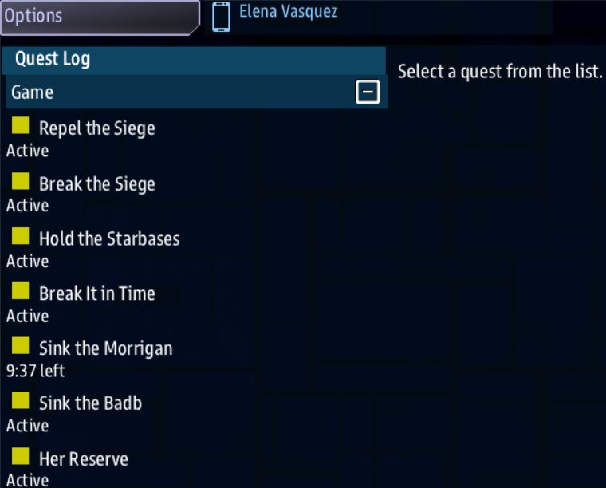

Class 2, Lecture 10 - A Siege boss, part 3¶
What you will have at the end¶
The Corsair Queen with a story of her own. The crew must sink the Morrigan, and has ten minutes to do it or the game is lost. The Badb is worth a bonus. Ninety seconds after the Queen arrives, a third ship she held back comes in, and the crew is told to sink that too.

The Quest Log after she arrives: Sink the Morrigan, Sink the Badb and Her Reserve under Siege's own quests.Most of that is lines in corsair_queen.amd, in words you learned in Class 1. The third
ship is one card of MAST. It is called her hook, and it lives in one new, small file.
The video¶
About 8 minutes. Subtitles are available in the player.
Before you start¶
corsair_queen.amdas Lecture 9 left it, indata\missions\common_data\bosses. A copy is in Lecture 9'sexample\folder.sbs lint common_data\bossessaysclean.- From Class 1, Lecture 9:
Then: reveal,Required:,Fails when:andLose:. - From Class 1, Lecture 11: your cards "finish a step" and "wait", and what lint says
when a card cannot be read: an error that ends
mast-compile.
Open the data\missions folder in VS Code, then common_data, bosses,
corsair_queen.amd.
Words for this lecture:
| Word | Meaning |
|---|---|
| Objective | A quest written under a boss. It is handed to the crew when she arrives |
| The Siege's tree | The Siege's own quests: one that wins the game, and three under it |
| Hook | A named block of MAST that the Siege runs once, when your boss arrives |
| Label | A named block of lines in a .mast file. Its first line starts with two or more = signs |
Step 1 - The test setting¶
You will play her several times today. In the first fence, change one line:
She arrives about four seconds into the game. You put the real number back in Step 13.
Step 2 - Read how a Siege ends¶
Open LegendaryMissions\maps\siege_quests.amd. Read it. Do not change it.
It holds four quests. They are the Siege's tree.
| Quest | Its key | The lines that matter | What it does |
|---|---|---|---|
| Repel the Siege | siege_mission |
Win: |
The top of the tree. When it is finished, the game is won |
| Break the Siege | break_siege |
Required: true, Done when: signal siege_won |
The Siege sends siege_won when every raider is gone |
| Hold the Starbases | hold_stations |
Lose: |
Fails when the last starbase is destroyed. The game is lost |
| Break It in Time | beat_clock |
Lose: |
Fails when the time limit runs out, if the server set Survive Clock to Loss. The game is lost. It is in the Quest Log, Active, even with Survive Clock left as it is |
So a Siege with no boss is won when every raider is gone, and lost when the starbases are.
Now look at your own objective. It says Parent: siege_mission. That line hangs it on
this tree, under Repel the Siege. Parent: is the older spelling of Part of:, which you
used in Class 1.
An objective under siege_mission |
Means |
|---|---|
With Required: true |
One more thing the crew must finish before the game is won |
With no Required: line |
Extra. It can be finished, failed or ignored, and the game is still won |
Everything today is built from that.
Step 3 - Make the objective mean what it says¶
Your objective is called Sink the Morrigan. It still says Done when: signal siege_won:
it is finished when every raider is gone. Make it say what its name says.
In the second fence, replace the Done when: line with these two:
destroy 1 morrigan reads: destroy one ship that has the role morrigan. You met roles
in Class 1. Your boss's ships get theirs from the Siege:
| Ship | Its roles |
|---|---|
Each ship on your Named: line |
Its own name in small letters (morrigan, badb), and boss |
| Each ship in her escort fleets | boss_fleet |
So the role is the name on your Named: line. You may write it Morrigan or morrigan.
It is one word, with nothing in front of it.
Objective: is the sentence the crew reads. Leave it out and the game makes one from the
trigger: Destroy 1 morrigan.
Other triggers work in a boss file too. Each kind was tried in a game:
| You write | The objective is finished when |
|---|---|
Done when: signal siege_won |
Every raider is gone |
Done when: destroy 1 morrigan |
The Morrigan is destroyed |
Done when: destroy 2 boss |
Two of her named ships are destroyed |
Done when: destroy 4 boss_fleet |
Four ships of her escort fleets are destroyed |
Done when: 3 minutes |
Three minutes after she arrives |
Done when: reach morrigan 3000 |
A crew ship is within 3000 of the Morrigan |
What changes in the game:
- The objective is finished, and its 600 credits are paid, the moment the Morrigan is destroyed.
- The game is still not won then. Break the Siege is
Required:too, and it wants every raider gone.
Step 4 - A bonus objective¶
Type this at the very end of the file, with one blank line above it:
## [Sink the Badb](sink_badb)
---
Quest
Scope: shared
State: active
Parent: siege_mission
Objective: Destroy the Badb
Done when: destroy 1 badb
Reward: 300 credits
---
[](ship://pirate_strongbow) The Badb, the Queen's second ship
A bonus. The Badb is the Queen's second ship. The siege can be won without sinking her.
Two hashes: it is an objective of the boss, like the first one.
The first line of the description is the ship itself. The Quest Log, on Helm's handheld, draws the Badb in 3D, about four lines tall, with your words above her as her caption:
| Part | What it is |
|---|---|
[](ship:// |
The start: empty square brackets, a round bracket, and ship://. No exclamation mark is needed |
pirate_strongbow |
The ship key. The same word as on your Named: line, after Badb |
) |
The end of the ship |
The Badb, the Queen's second ship |
Her caption, drawn centered above her |
Then a blank line, and the description as before. If you change the Badb's ship on the
Named: line, change it here too: nothing joins the two, and lint reads neither.
It has no Required: line. The crew is paid 300 if they sink the Badb, and they can win
without doing it.
Step 5 - A way to lose¶
Give the crew a clock. Add three lines to the fence of Sink the Morrigan, under its
Done when: line:
| Line | Meaning |
|---|---|
Fails when: 30 seconds |
The objective fails thirty seconds after she arrives. This is a test number |
Fatal: true |
When this objective fails, Repel the Siege fails with it |
Lose: |
When this objective fails, the game is lost. The sentence is the reason given |
You used Fails when: and Lose: in Class 1. Fatal: is new. Use the three together.
Play it now. Start the Siege with your boss chosen, and sit still. About thirty seconds after she arrives, the game ends with your sentence.
Then change the test number to the real one:
The crew gets no warning as the time runs down. So tell them the limit in words they
read at the start. Change the Objective: line, and replace the description under the
fence with a page:
[](ship://pirate_brigantine) The Morrigan, the Queen's flagship
The Queen's flagship Morrigan leads the last assault. Sink her within ten minutes of her arrival, or the sector is lost.
-  Ten minutes, from the moment she arrives.
-  When the time is up, the game is lost.
The ship line is the one you wrote for the Badb, with the Morrigan's ship from your
Named: line. The last two lines are a list, and each item starts with an icon in place of
its dash:
| Part | What it is |
|---|---|
- |
A list item: a hyphen and a space, as in Class 1 |
 |
An icon one line tall. hourglass is its name |
Ten minutes, ... |
The words beside it |
An icon's name has to be one the game has. A few that suit a briefing: hourglass,
skull, flag, wanted, shield, shield-broken, crosshair, radar, stop,
handshake, first-aid. There is no warning. A name the game does not have draws
nothing, and lint says clean, so copy names from this list.
If the crew sinks her in time, the objective is finished and the clock no longer matters.
Step 6 - Another ending, to try¶
There is one more line an objective can have. Add it to Sink the Morrigan, under the
Lose: line:
With a Win: line, the game is won the moment that objective is finished, with your
sentence. Raiders still flying do not matter.
It is a good ending for some bosses. It is the wrong one for this boss, because of what comes next: the Queen has a ship in reserve, and a game that ends when the Morrigan sinks can end before it arrives.
Delete the Win: line again. Keep it in mind for a boss of your own.
| An objective with | Ends the game |
|---|---|
Required: true |
Not by itself. The Siege cannot be won until it is finished |
Win: and a sentence |
At once, as a win, when it is finished |
Fails when:, Fatal: true, Lose: and a sentence |
At once, as a loss, when it fails |
Step 7 - A hook that is already written¶
Some things no line in a boss file can say. A ship that arrives later is one. For those
a boss has one more line in her first fence: Hook:. It names a label, and the Siege runs
that label once, when she arrives, after her ships are on the map and her objectives are
in the list.
One hook comes with LegendaryMissions. Try it. In the first fence, under the Named:
line, add:
Play it. When the Queen arrives, a swarm of BioMechs arrives with her. You wrote no MAST:
biomech_infestation is a label the Infestation boss uses, and any boss may name it.
BioMechs are not her story. In Step 9 you change this line to name a hook of her own.
Step 8 - A place for her own hook¶
A hook of your own is a label, and a label has to be in a .mast file. Where that file
goes is the one awkward thing in this lesson.
| What | Where it lives | What an update to LegendaryMissions does |
|---|---|---|
| Her boss file | common_data\bosses\corsair_queen.amd |
Leaves it alone |
| Her hook | LegendaryMissions\corsair_queen\__init__.mast |
Deletes it |
The shared bosses folder takes .amd files only. A hook has to be inside the
LegendaryMissions folder. You do not change any file that came with the game: you add a
folder of your own. "Keep your work safe", below, says what to do about updates.
Make the folder and the file:
- In the VS Code file list, right-click the
LegendaryMissionsfolder and choose New Folder. Typecorsair_queen. - Right-click the new
corsair_queenfolder and choose New File. Type__init__.mast.
The file name is exact: two underscores, init, two underscores, .mast. The game reads
every file of that name it finds in a folder inside LegendaryMissions. A file with any
other name is not read.
Step 9 - The smallest hook¶
Paste this into the empty __init__.mast:
#
# The Corsair Queen's hook: what she does when she arrives.
# Her boss file says Hook: corsair_queen_hook and that name is the label below.
#
=== corsair_queen_hook
comms_broadcast(role("__player__"), "The Corsair Queen has entered the sector.", "#f33")
->END
| Line | Meaning |
|---|---|
The # lines |
A comment, for you |
=== corsair_queen_hook |
The label: three = signs, a space, a name. The name is yours: small letters and underscores, no spaces |
The comms_broadcast line |
Says one sentence to every crew ship. Your words are in the second pair of quote marks. "#f33" is a color: red |
->END |
The block is finished |
Remember from Class 1: in a .mast file a note starts with #, never with //. The
label line is at the left edge. The lines under it start four spaces in.
Now point the boss at it. In corsair_queen.amd, change the Hook: line:
The word after Hook: and the word after === must be the same, letter for letter.
Check it. There are two things to check now, so there are two commands:
The first reads your boss file, as before, and says clean.
The second reads all of LegendaryMissions, your card included, the way the game will. It
prints each file's name and, under it, clean or its findings. With one boss file of
yours, it ends:
Read that last line for 0 error(s). The two warnings are not yours. They are in two
files that came with the game, maps\sides.amd and maps\mission_helper_functions.py,
and they are there on a copy nobody has touched. Leave them alone. A finding that names
corsair_queen\__init__.mast or common_data\bosses\corsair_queen.amd is yours.
Then play it. Nothing told the crew that a boss had arrived before. Now, as she arrives, every crew ship is told:
That is a whole hook. The rest of the lesson makes it do more.
Step 10 - Hold a ship in reserve¶
The card. Put your cursor at the end of the comms_broadcast line and press Enter.
Type these four lines, each lined up with the line above it:
await delay_sim(10)
->END if GAME_ENDED
prefab_spawn(prefab_siege_boss_ship, {"START_X": 0, "START_Y": 0, "START_Z": 28000, "NAME": "Nemain", "BOSS_ART": "pirate_brigantine", "BOSS_ROLES": "raider, boss, nemain"})
signal_emit("quest_signal", {"SIGNAL_NAME": "nemain_arrived"})
| Line | Meaning |
|---|---|
await delay_sim(10) |
Your "wait" card. Ten seconds is a test number |
->END if GAME_ENDED |
If the game is already over when the wait ends, stop here |
The prefab_spawn line |
Brings in one more named ship, the way the Siege brings in the ships on your Named: line. It is one long line. Do not press Enter inside it |
The signal_emit line |
Your "finish a step" card. It sends the signal nemain_arrived |
On the ship line you change four things, and nothing else:
| On the line | Change it to |
|---|---|
The three numbers 0, 0, 28000 |
Where she appears. The middle of the map is 0, 0, 0. Leave the second number at 0 |
Nemain |
Her name. One word |
pirate_brigantine |
A ship key from Lecture 9's table |
nemain, the last word |
Her name in small letters. It is her role. Keep raider, boss, in front of it |
If you change pirate_brigantine on this line, change the ship line at the top of Sink the
Nemain below to match.
The objectives. A signal finishes a step, and a step can reveal another. That is the
chain from Class 1. Type these two records at the very end of corsair_queen.amd:
## [Her Reserve](reserve)
---
Quest
Scope: shared
State: active
Parent: siege_mission
Objective: Watch for a third ship
Done when: signal nemain_arrived
Then: reveal sink_nemain
---
The Queen never commits everything at once. Watch for a third ship.
Somewhere out in the dark she is holding one more hull back, and she will send it in when it suits her, not when it suits you.
## [Sink the Nemain](sink_nemain)
---
Quest
Scope: shared
Starts when: revealed
Parent: siege_mission
Objective: Destroy the Nemain
Done when: destroy 1 nemain
Reward: 400 credits
---
[](ship://pirate_brigantine) The Nemain, the Queen's reserve
The Nemain is here: the Queen's reserve. Sink her too.
Three things to get right.
The address is the key alone. In your Class 1 mission you wrote Then: reveal
salvage/home: the arc, a slash, the step. A boss's objective has no arc above it, and the
boss is not part of its address. Write Then: reveal sink_nemain. If you write
corsair_queen/sink_nemain, lint says clean and the step never appears.
A hidden step has no State: active line. Sink the Nemain says Starts when:
revealed where the others say State: active. If you copy an objective to make it,
delete the State: line. With both lines in one fence the lower one wins.
Neither of these is Required:. They depend on your hook, and your hook is the one
part of this boss an update can take away.
One rule for chains of your own: a hidden step does not see what happened before it was revealed. Do not hide a step about a ship that is already on the map. If the crew sinks that ship first, the step appears later and can never be finished. The Nemain is safe: she arrives in the same moment her step is revealed.
Step 11 - Check it¶
From the first you want:
From the second you want 0 error(s) on the last line, and no finding under a file of
yours. The two warnings in the game's own files are still there.
The mistakes below were each made on purpose, and each was played.
In the boss file, and lint tells you. The word in the last column is at the end of the line lint prints.
| Mistake | What the game does | Lint says |
|---|---|---|
Done when: sink the morrigan (not a word the game watches for) |
The objective can never be finished | unknown-trigger |
Done when: destroy 2 bosses (the plural of boss) |
The same | trigger-role-plural |
When: destroy 1 morrigan where Done when: was meant |
The same | quest-never-finishes |
Fails when: ten minutes (the number as a word) |
No time limit | unknown-trigger |
Fails when: on a Required: objective, with no Fatal: and no Lose: |
When the time runs out the objective fails. After that the game cannot be won | required-step-dead-end |
Lose: with no Fatal: true, on a Required: objective |
The game is lost with your sentence, as you meant | required-step-dead-end all the same. Add the Fatal: line and lint is quiet |
Loose: for Lose: |
The objective fails and the game never ends. It cannot be won or lost | unknown-field |
Parent: seige_mission |
The objective is not part of the ending. The crew wins without it | dangling-parent |
Required true (no colon) |
The same | An error: it expected Label: value |
Then: reveal sink_nemian (misspelled) |
Sink the Nemain never appears | dangling-reveal, and never-revealed on Sink the Nemain |
| A hidden step that nothing reveals | It never appears | never-revealed |
Starts when: reveal (the ed left off) |
The step is not hidden. It is listed from her arrival, as a job waiting to be accepted | unknown-trigger |
| Two objectives with one key | Only the first appears | duplicate-key |
| An objective heading with three hashes | It still plays. mast.runtime.log has a line about the heading |
An error: heading-level-jump |
The word Quest deleted from an objective's fence |
It still plays | unknown-field, on most lines of that fence |
Hook: typed in an objective's fence |
No hook runs | unknown-field |
Hook: typed below the first fence's closing --- |
No hook runs | field-below-fence |
Win: typed in the boss's own fence |
Nothing. The game is not won by it | unknown-field |
The signal on the card is not the one after Done when: signal |
The Nemain arrives. Her Reserve never finishes, and Sink the Nemain never appears | unfired-signal |
signal_emit("nemain_arrived") on the card, the short way |
The same | unfired-signal. It says a quest does not hear a plain signal_emit |
The card's file is named __init__.mast.txt, or the corsair_queen folder is gone |
She arrives without her hook: no sentence, no reserve ship | unfired-signal |
In the boss file, and lint says clean. Check these by eye.
| Mistake | What the game does |
|---|---|
Hook: names a label that is not there: misspelled, capitals, spaces, quote marks |
She arrives without her hook: no sentence, no reserve ship. mast.runtime.log says the hook was not found |
Done when: destroy 1 morigan (the name misspelled) |
The objective can never be finished. On a Required: one, every raider is destroyed and the game does not end |
Done when: destroy the Morrigan |
The same. The game looks for a role called the morrigan |
Then: reveal corsair_queen/sink_nemain |
Sink the Nemain never appears. mast.runtime.log has a line about it |
State: active left in the hidden step, below Starts when: revealed |
The step is not hidden. It is live from her arrival |
No State: line and no Starts when: line |
The objective is a job waiting to be accepted, not a live one. A ship sunk before then does not count. On a Required: one the game then cannot be won |
Required: true with no Parent: line |
Not required. The crew wins without it |
Fatal: true and Fails when: with no Lose: line |
When the time runs out the objective fails, and the game never ends. It cannot be won or lost |
| An objective heading with one hash | The objective never appears. The crew wins without it |
An objective with the key of one of the Siege's own quests, such as break_siege |
Your objective never appears |
Reward: 600, or Reward: six hundred credits |
Nothing is paid |
In the card. The last column is what sbs lint LegendaryMissions prints under
corsair_queen\__init__.mast.
| Mistake | What the game does | Lint says |
|---|---|---|
| A quote mark left off | Nothing in LegendaryMissions runs. No map, no ships, on any map | An error: mast-compile. It says unterminated string literal, with the line |
| One line indented three spaces, the others four | The same | mast-compile. It says Bad indentation |
A note of your own that starts with // |
The same | mast-compile. It says Unrecognized syntax |
| The closing curly bracket left off the ship line | The same | mast-compile. It says a parenthesis does not match |
| The card pasted twice | The same | mast-compile. It says Duplicate label 'corsair_queen_hook' |
In the card, and lint says nothing. Check these by eye.
| Mistake | What the game does |
|---|---|
The file is named corsair_queen.mast, not __init__.mast |
She arrives without her hook: no sentence, no reserve ship. mast.runtime.log says the hook was not found |
The label's name is not the word after Hook: |
The same |
prefab_siege_boss_ship misspelled |
The game stops on a page of errors when the wait ends |
delay_sim(10) with no await |
No wait. The Nemain is there when the Queen arrives |
The ship key misspelled, pirate_brigantin |
A ship named Nemain arrives, on a ship key the game does not have. Do not share a boss like this |
No ->END on the last line |
It works. Keep the line anyway |
The label written == corsair_queen_hook == |
It works |
The card pasted at the end of LegendaryMissions\story.mast, with no file of its own |
It works. But that is one of the game's own files, and an update puts the original back |
Read the first table twice. Your Class 1 cards were in your own mission. This card is
inside LegendaryMissions, so a card the game cannot read stops every LegendaryMissions map,
not only your boss. Run sbs lint LegendaryMissions every time you touch the card.
For the mistakes nothing warns you about, check four things by eye:
- The word after
Hook:is the word after===. - The word after
"SIGNAL_NAME":is the word afterDone when: signal. - Every role after
destroyis a name on yourNamed:line, or the last word of the ship line. - The address after
Then: revealis a key, with no slash.
Step 12 - Play it¶
- Start the game with
sbs run server,helm,weapons -m LegendaryMissions. Stay on Siege. - In the Options panel, set Difficulty to 5 and choose Corsair Queen on the Boss line.
- Press Start Mission.
With the test numbers, this is what happens:
- About four seconds in, she arrives. Every crew ship is told
The Corsair Queen has entered the sector., in red, in the strip under the left panel (on Helm, for one). It stays about thirty seconds, and it is not kept in the Messages list. - The Quest Log, on Helm's handheld, has three new objectives: Sink the Morrigan, Sink the Badb and
Her Reserve. Sink the Nemain is not there. Sink the Morrigan's row shows the time
left, such as
8:45 left, in place of Active. - About ten seconds later the Nemain arrives, 28000 from the middle, and she starts
to move. Find her on Science's map: the contact list reads
unknownfor a ship nobody has scanned. The crew is toldQuest complete: Her Reserve. Sink the Nemain is now in the list. - Sink a named ship and its objective completes.
- When the Morrigan is sunk and every raider is gone, the game is won.
To see an objective complete you have to win a fight. Set Difficulty low and bring a
crew. To see the game lost you need nobody: put Fails when: 30 seconds back for one
game, as in Step 5.
What the crew is told, word for word:
| When | The crew is told |
|---|---|
| She arrives | The Corsair Queen has entered the sector. |
| The Nemain arrives | Quest complete: Her Reserve |
| The Nemain is sunk | Quest complete: Sink the Nemain |
| The Badb is sunk | Quest complete: Sink the Badb |
| The Morrigan is sunk | Mission complete: Sink the Morrigan |
| Every raider is gone | Quest complete: Break the Siege, then Mission complete: Repel the Siege |
| The ten minutes run out | Mission failed: Sink the Morrigan, then Mission failed: Repel the Siege |
Sink the Morrigan is called a mission there because it has a Lose: line: it can end the
game.
Nothing tells the crew that an objective has appeared. That is why Step 9's sentence is worth having.
What the side is paid. The 500 is the Siege's own reward for keeping every starbase:
| Ending | Credits |
|---|---|
| Won, Morrigan only | 600 + 500 = 1,100 |
| Won, with the Nemain | 1,500 |
| Won, with the Badb and the Nemain | 1,800 |
| Lost on the clock | 500 |
Step 13 - Put the real numbers back¶
Three numbers were for testing.
In corsair_queen.amd:
and check that Sink the Morrigan says Fails when: 10 minutes.
In the card:
Then add four lines to the note at the top of corsair_queen.amd, so the note reads:
// The Corsair Queen - my Siege boss.
// She arrives when 4 raiders in 10 are left: two named ships and three escort fleets,
// two levels above the game's difficulty. Three games in four the fleets are her own
// pirates. One game in four she has hired Kraliens.
//
// Her story: sink the Morrigan within ten minutes or the game is lost. The Badb is a
// bonus. Ninety seconds after she arrives a third ship, the Nemain, comes in. That part
// is her hook: LegendaryMissions\corsair_queen\__init__.mast.
Save both files. Run both lint commands once more.
Keep your work safe¶
Your boss is now two things in two places.
| File | Where | Safe from an update |
|---|---|---|
corsair_queen.amd |
common_data\bosses |
Yes |
corsair_queen\__init__.mast |
LegendaryMissions |
No. An update replaces the whole LegendaryMissions folder |
After an update your boss is still in the Boss list, because her .amd file is still
there. Her hook is gone. If you choose her then, she arrives without it: her ships and her
objectives are there, the reserve ship never comes, and mast.runtime.log in the
LegendaryMissions folder says the hook was not found.
Lint notices too. With the folder gone, sbs lint common_data\bosses warns that Her
Reserve waits for a signal nothing sends. That warning, on a file that was clean last
week, means the folder is missing.
So:
- Keep a copy of the
corsair_queenfolder somewhere outsideLegendaryMissions. Your Documents folder will do. - After every update to LegendaryMissions, copy the folder back in before you play her.
- Until you put it back she plays without her reserve ship, and Her Reserve stays open in the list.
- To give her to a friend, send both: the
.amdfile for theircommon_data\bossesfolder, and thecorsair_queenfolder for theirLegendaryMissionsfolder.
The finished files¶
common_data\bosses\corsair_queen.amd:
// The Corsair Queen - my Siege boss.
// She arrives when 4 raiders in 10 are left: two named ships and three escort fleets,
// two levels above the game's difficulty. Three games in four the fleets are her own
// pirates. One game in four she has hired Kraliens.
//
// Her story: sink the Morrigan within ten minutes or the game is lost. The Badb is a
// bonus. Ninety seconds after she arrives a third ship, the Nemain, comes in. That part
// is her hook: LegendaryMissions\corsair_queen\__init__.mast.
# [Corsair Queen](corsair_queen)
---
Boss
Trigger: enemies_low
Low: 40%
Flies: 75% Pirate, 25% Kralien
Fleets: 3
Difficulty: +2
Named: Morrigan pirate_brigantine, Badb pirate_strongbow
Hook: corsair_queen_hook
---
The Corsair Queen watched the siege falter from the dark. Now she brings her own ships to finish it.
## [Sink the Morrigan](sink_morrigan)
---
Quest
Scope: shared
State: active
Parent: siege_mission
Required: true
Objective: Destroy the Morrigan within ten minutes
Done when: destroy 1 morrigan
Fails when: 10 minutes
Fatal: true
Lose: The Morrigan broke the line. The sector is hers.
Reward: 600 credits
---
[](ship://pirate_brigantine) The Morrigan, the Queen's flagship
The Queen's flagship Morrigan leads the last assault. Sink her within ten minutes of her arrival, or the sector is lost.
-  Ten minutes, from the moment she arrives.
-  When the time is up, the game is lost.
## [Sink the Badb](sink_badb)
---
Quest
Scope: shared
State: active
Parent: siege_mission
Objective: Destroy the Badb
Done when: destroy 1 badb
Reward: 300 credits
---
[](ship://pirate_strongbow) The Badb, the Queen's second ship
A bonus. The Badb is the Queen's second ship. The siege can be won without sinking her.
## [Her Reserve](reserve)
---
Quest
Scope: shared
State: active
Parent: siege_mission
Objective: Watch for a third ship
Done when: signal nemain_arrived
Then: reveal sink_nemain
---
The Queen never commits everything at once. Watch for a third ship.
Somewhere out in the dark she is holding one more hull back, and she will send it in when it suits her, not when it suits you.
## [Sink the Nemain](sink_nemain)
---
Quest
Scope: shared
Starts when: revealed
Parent: siege_mission
Objective: Destroy the Nemain
Done when: destroy 1 nemain
Reward: 400 credits
---
[](ship://pirate_brigantine) The Nemain, the Queen's reserve
The Nemain is here: the Queen's reserve. Sink her too.
LegendaryMissions\corsair_queen\__init__.mast:
#
# The Corsair Queen's hook: what she does when she arrives.
# Her boss file says Hook: corsair_queen_hook and that name is the label below.
#
=== corsair_queen_hook
comms_broadcast(role("__player__"), "The Corsair Queen has entered the sector.", "#f33")
await delay_sim(90)
->END if GAME_ENDED
prefab_spawn(prefab_siege_boss_ship, {"START_X": 0, "START_Y": 0, "START_Z": 28000, "NAME": "Nemain", "BOSS_ART": "pirate_brigantine", "BOSS_ROLES": "raider, boss, nemain"})
signal_emit("quest_signal", {"SIGNAL_NAME": "nemain_arrived"})
->END
Both are in example\.
Your hook card¶
Keep this with your three cards from Class 1.
The hook card. A file named __init__.mast, in a folder of your own inside
LegendaryMissions:
and one line in the boss's first fence:
| Change | To |
|---|---|
corsair_queen_hook, in both places |
A name of your own. The same word in both |
Lines that can go inside it:
| Line | Does |
|---|---|
comms_broadcast(role("__player__"), "Your sentence.", "#f33") |
Says a sentence to every crew ship |
await delay_sim(90) |
Waits. Your "wait" card |
->END if GAME_ENDED |
Stops if the game is over. Put it after every wait |
prefab_spawn(prefab_siege_boss_ship, {...}) |
Brings in a named ship. Copy the whole line from Step 10 |
signal_emit("quest_signal", {"SIGNAL_NAME": "your_word"}) |
Finishes an objective that says Done when: signal your_word. Your "finish a step" card |
One boss, one hook. A second boss gets a label of its own: a second card in the same
file, under the first card's ->END, or a file in a second folder. Two labels cannot have
the same name.
If something goes wrong¶
| What you see | Likely cause |
|---|---|
| LegendaryMissions starts with no maps, or with a page of errors | The game cannot read the card. Run sbs lint LegendaryMissions and fix the line it shows. If you cannot, move the corsair_queen folder out of LegendaryMissions |
| She arrives, and nothing her hook does happens | The word after Hook: is not the name of a label. The folder is missing, the file is not named __init__.mast, or the two words differ. mast.runtime.log says so |
| The game stops with an error some seconds after she arrives | A word on the ship line is misspelled |
| She arrives and no sentence is shown | The Hook: line is missing, below the closing ---, or in the wrong fence |
| The Nemain is there at once | No await in front of delay_sim |
| The Nemain arrives and Sink the Nemain never appears | The signal on the card and the one after Done when: signal differ, or Then: reveal has a slash in it |
| Sink the Nemain is in the list from the start | It still has a State: active line |
| A named ship is destroyed and its objective stays open | The role after destroy is not that ship's name, or the objective has no State: active line |
| Every raider is gone and the game does not end | A Required: objective cannot be finished. Look for a misspelled role |
| The time runs out and nothing happens, then or later | Fatal: true with no Lose: line, or Lose: misspelled |
| The game ends as soon as one ship is sunk | A Win: line is still in the file from Step 6 |
| BioMechs arrive with her | The Hook: line still says biomech_infestation |
| After an update, she arrives and her reserve ship never comes | The update removed the corsair_queen folder. Copy it back |
| A change you saved did nothing | The mission was already running. Boss files and cards are read when the mission starts |
| Lint warns about every line of the first fence | Your copy of the game or of sbs is older than this course. Let the store update the game to 1.4.0, and type sbs update |
mast.runtime.log is in the LegendaryMissions folder. It is empty after a clean game.
Exercise¶
On your own boss, the second one you made in Lectures 8 and 9.
- Make its objective mean what it says:
Done when: destroy 1and the name of its flagship. Give it anObjective:line. - Add a bonus objective for its second named ship.
- Give it a deadline and a
Lose:sentence in your own words. Test it at 30 seconds, then set the real time. Put the limit in theObjective:line. - Decide how it ends. If sinking the flagship should end the Siege at once, use a
Win:line and your own sentence. If the crew should have to clear the field, useRequired: true. - Give it a hook that says one sentence when it arrives. Add a second card to
__init__.mast, under the first card's->END, with a label name of its own. - Run both lint commands. Play it.
Break it on purpose. Change one letter in the Hook: line of your second boss. Run
both lint commands: they say nothing about it. Play it. The boss arrives and says
nothing. Open mast.runtime.log and read the line. Fix it.
A count. Give the Corsair Queen one more bonus: an objective that says Done when:
destroy 4 boss_fleet, with a reward and no Required: line.
Checkpoint¶
You are done when all six are true:
sbs lint common_data\bossesshows your file asclean, andsbs lint LegendaryMissionsends with0 error(s)and no finding under a file of yours.- When she arrives, the crew is told your sentence.
- Sink the Morrigan, Sink the Badb and Her Reserve are in the Quest Log when she arrives. Sink the Nemain is not.
- After the wait on your card, the Nemain is on the map and Sink the Nemain is in the list.
- With
Fails when: 30 seconds, sitting still ends the game with yourLose:sentence. - You have a copy of the
corsair_queenfolder outsideLegendaryMissions.
Next¶
Lecture 11 is the capstone: the Corsair Queen gets a voice. She hails the crew, and you play the whole boss in a Siege.
Further reading¶
- "Writing a Siege boss" in the LegendaryMissions documentation: the reference for the
boss fields and for hooks. It shows a boss's own
.mastfile kept inmaps\bossesand listed inmaps\__init__.mast. That is how a boss that ships with the game does it. It means changing a file an update replaces, so this lesson uses a folder of your own. LegendaryMissions\maps\bosses\ragnarok.amd: a boss with a required objective and an optional one.infestation.amd: a boss whose whole fight is its hook.- "Quests" in the library documentation: the mission tree,
Required:,Fatal:,Win:andLose:. - Class 1, Lecture 11, "Your recipe cards": the wait card and the finish-a-step card you used inside the hook.
Download this lecture's finished files (a zip of its example folder).